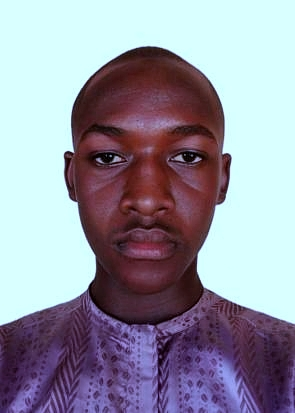

DFLAB
Digital Forensics Laboratory project documenting infrastructure, evidence management, tools, security, and deployment planning.
View DFLABDigital Forensics
Digital Forensics student focused on the examination, analysis, preservation, and documentation of digital evidence.
This portfolio documents my professional profile and developing experience through practical projects, SIWES, technical study, research, and DFLAB.

Preserve. Examine.
Understand.
Professional profile
I am developing practical and analytical skills in digital evidence examination through academic study, laboratory work, technical projects, and research.
About mePortfolio highlights
Digital Forensics Laboratory project documenting infrastructure, evidence management, tools, security, and deployment planning.
View DFLABIndustrial training record, with organization-specific information and activities to be completed from verified documentation.
View experienceSpace for technical research papers, literature reviews, tool evaluations, notes, and practical observations.
Explore researchTechnical development
Explore my developing skills, documented training, and forensic project areas.
Download my Digital Forensics CV.
Download CV